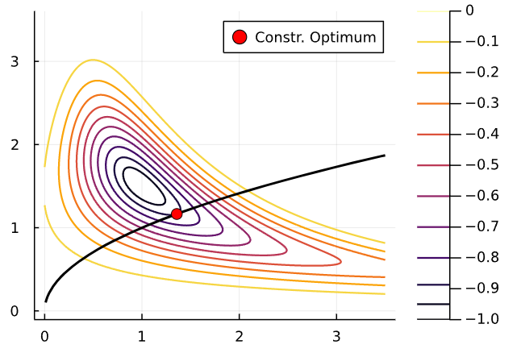
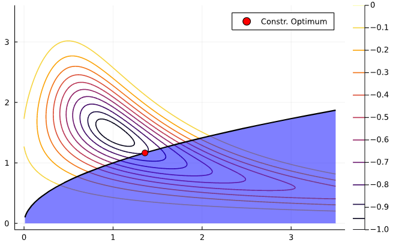
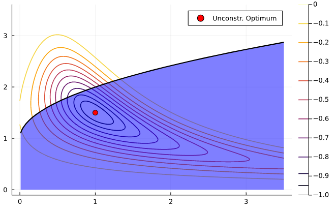
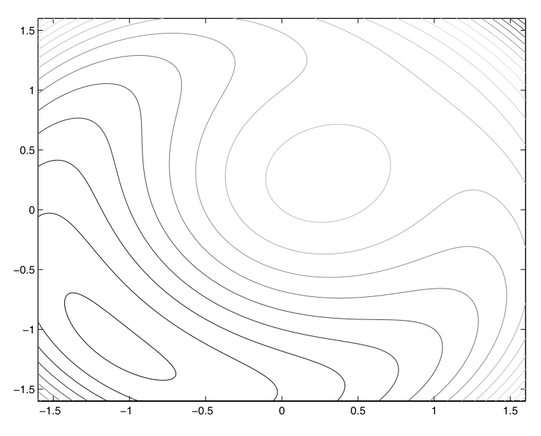
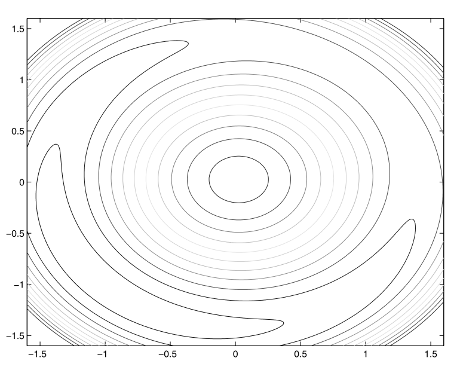

ACE 592 - Lecture 4.3
Constrained optimization: theory and methods
0.1 Course Roadmap
- Introduction to Scientific Computing
- Fundamentals of numerical methods
- Systems of equations
- Optimization
- Unconstrained optimization: intro
- Unconstrained optimization: line search and trust region methods
- Constrained optimization: theory and methods
- Constrained optimization: modeling framework
- Function approximation
- Structural estimation
0.2 Agenda
- In this lecture, we will review the theory underlying constrained optimization
- Then, we will survey general families of methods
- Programming constrained optimization solvers is a difficult task. Next lecture we will see packages to help us with that
0.3 Main references for today
- Miranda & Fackler (2002), Ch. 4
- Judd (1998), Ch. 4
- Nocedal & Writght (2006), Chs. 12, 15, 17–19
- Lecture notes from Ivan Rudik (Cornell) and Florian Oswald (SciencesPo)
- A.K. Dixit (1990), Optimization in Economic Theory
1 Constrained optimization theory
1.1 Constrained optimization setup
We want to solve
\min_x f(x)
subject to
\begin{gather} g(x) = 0\\ h(x) \leq 0 \end{gather}
where f:\mathbb{R}^n \rightarrow \mathbb{R}, g:\mathbb{R}^n \rightarrow \mathbb{R}^m, h:\mathbb{R}^n \rightarrow \mathbb{R}^l, and f, g, and h are twice continuously differentiable
- We have m equality constraints and l inequality constraints
1.2 Constraint types
Constraints come in two types: equality or inequality
Let’s see a an illustration with a single constraint. Consider the optimization problem
\min_x -exp\left(-(x_1 x_2 - 1.5)^2 - (x_2 - 1.5)^2 \right)
subject to x_1 - x_2^2 = 0
- The equality constraint limits solutions along the curve where x_1 = x_2^2
1.3 Constraint types

1.4 Constraint types
The problem can also be formulated with an inequality constraint
\min_x -exp\left(-(x_1 x_2 - 1.5)^2 - (x_2 - 1.5)^2 \right)
subject to -x_1 + x_2^2 \leq 0
. . .
How would that change feasible set compared to the equality constraint?
1.5 Constraint types
- The feasible set is in blue
- It extends below and to the right
- The solution in this case is along the boundaries of the feasible set
- It coincides with the equality constraint
- In those cases, we say the constraint is binding or active

1.6 Constraint types
If the solution is interior to the feasible set, we say the constraint is slack or inactive
- The solution to the constrained optimization problem is the same as the unconstrained one

1.7 Solving constrained optimization problems
You may recall from Math Econ courses that, under certain conditions, we can solve a constrained optimization problem by solving instead the corresponding mixed complementary problem using the first order conditions
That trick follows from the Karush-Kuhn-Tucker (KKT) Theorem
What does it say?
1.8 Karush-Kuhn-Tucker Theorem
If x^* is a local minimizer and the constraint qualification1 holds, then there are multipliers \lambda^* \in \mathbb{R}^m and \mu^* \in \mathbb{R}^l such that x^* is a stationary point of \mathcal{L}, the Lagrangian
\mathcal{L}(x, \lambda, \mu) = f(x) + \lambda^T g(x) + \mu^T h(x)
- Variables \lambda and \mu are called Lagrange multipliers and in Economics have the intepretation of shadow prices
. . .
How does this theorem help us?
1.9 Karush-Kuhn-Tucker Theorem
Put another way, the theorem states that \mathcal{L}_x(x^*, \lambda^*, \mu^*) = 0
. . .
So, it tell us that (x^*, \lambda^*, \mu^*) solve the system
\begin{gather} f_x + \lambda^T g_x + \mu^T h_x = 0 \\ \mu_i h^i(x) = 0, \; i = 1, \dots, l \\ g(x) = 0 \\ h(x) \leq 0 \\ \mu \leq 0 \end{gather}
- Subscripts ( _x) denote derivatives w.r.t. x (it’s a vector)
- h^i(x) is the i-th element of h(x)
1.10 The KKT approach
The KKT theorem gives us a first approach to solving unconstrained optimization problems
- If the problem has box constraints ( a \leq x \leq b), we can solve the corresponding mixed complementarity problem CP(f^\prime, a, b) as we saw in unit 3
. . .
- If constraints are more elaborated and multidimensional, we need to solve a series of nonlinear systems: one for each possible combination of binding inequality constraints
- This is probably how you learned to solve utility maximization with a budget constraint
1.11 The KKT approach
Let \mathcal{I} be the set of {1, 2, ..., l} inequality constraints. For a subset \mathcal{P} \in \mathcal{I}, we define the \mathcal{P} problem as the nonlinear system of equations
\begin{gather} f_x + \lambda^T g_x + \mu^T h_x = 0 \\ h^i(x) = 0, \; i \in \mathcal{P} \\ \mu_i = 0, \; i \in \mathcal{I} - \mathcal{P} \\ g(x) = 0 \end{gather}
. . .
We solve this system for every possible combination of binding constraints \mathcal{P}
- There might not be a solution for some combinations. That’s OK
- Compare the solutions of all combinations and pick the optimal (where f attains the smallest value, in this case)
1.12 The KKT approach
- When we have a good intuition about the problem, we may know ahead of time which constraints will bind
- For example, with monotonically increasing utility functions, we know the budget constraint binds
. . .
- But as the number of constraints grows, we have an even larger number of possible combinations
- More combinations = more nonlinear systems to solve and compare
1.13 Other solution approaches
The combinatorial nature of the KKT approach is not that desirable from a computational perspective
However, if the resulting nonlinear systems are simple to solve, we may still favor KKT
There are computational alternatives to KKT. We’ll discuss three types of algorithms
- Penalty methods
- Active set methods
- Interior point methods
2 Constrained optimization algorithms
2.1 Penalty methods
Suppose we wish to minimize some function subject to equality constraints (easily generalizes to inequality) \min_x f(x) \,\,\, \text{s. t.} \,\, g(x) = 0
. . .
How does an algorithm know to not violate the constraint?
. . .
One way is to introduce a penalty function into our objective and remove the constraint
Q(x;\rho) = f(x) + \rho P(g(x))
where \rho is the penalty parameter
2.2 Penalty methods
With this, we transformed it into an unconstrained optimization problem \min_x Q(x; \rho) = f(x) + \rho P(g(x))
. . .
How do we pick P and \rho?
. . .
A first idea is to penalize a candidate solution as much as possible whenever it leaves the feasible set: infinite penalty!
Q(x) = f(x) + \infty \mathbf{1}(g(x) \neq 0) where \mathbf{1} is an indicator function
- This is the infinity step method
2.3 Penalty methods
However, the infinite step method is a pretty bad idea
- Q becomes discontinuous and non-differentiable: it’s very hard for algorithms to iterate near the region where the constraint binds
- Any really large value of \rho leads to the same practical problem
. . .
So we might instead use a more forgiving penalty function
2.4 Penalty methods
A widely-used choice is the quadratic penalty function
Q(x;\rho) = f(x) + \frac{\rho}{2} \sum_i g_i^2(x)
- For inequality constraint h(x) \leq 0, we can use [\max(0, h_i(x))]^2
. . .
The second term increases the value of the function
- bigger \rho \rightarrow bigger penalty from violating the constraint
. . .
The penalty terms are smooth \rightarrow use unconstrained optimization techniques
to solve the problem by searching for iterates of x_k
2.5 Penalty methods
Algorithms generally iterate on sequences of \rho_k \rightarrow \infty as k \rightarrow \infty, to require satisfying the constraints as we close in
. . .
There are also Augmented Lagrangian methods that take the quadratic penalty method and add explicit estimates of Lagrange multipliers to help force binding constraints to bind precisely
2.6 Penalty method example
Example: \min x_1 + x_2 \,\,\,\,\,\text{ subject to: } \,\,\, x_1^2 + x_2^2 - 2 = 0
. . .
Solution is pretty easy to show to be (-1, -1)
. . .
The penalty method function Q(x_1, x_2; \rho) is
Q(x_1, x_2; \rho) = x_1 + x_2 + \frac{\rho}{2} (x_1^2 + x_2^2 - 2)^2
. . .
Let’s ramp up \rho and see what happens to how the function looks
2.7 Penalty method example
\rho = 1, solution is around (-1.1, -1.1)

2.8 Penalty method example
\rho = 10, solution is very close to (-1, -1). Notice how quickly value increases outside x_1^2 + x_2^2 = 2 circle

2.9 Active set methods
The KKT method can lead to too many combinations of constraints to evaluate
Penalty methods don’t have the same problem but still require us to evaluate every constraint, even if they are not binding
. . .
Improving on the KKT approach, active set methods strategically pick a sequence of combinations of constraints
2.10 Active set methods
Instead of trying all possible combinations, like in KKT, active set methods start with an initial guess of the binding constraints set
Then, iterate by periodically checking constraints
- Add or keep the ones that are active (binding)
- Drop the ones that are inactive (slack)
. . .
If an appropriate strategy of picking sets is chosen, active set algorithms converge to the optimal solution
2.11 Interior point methods
Interior point methods are also called barrier methods
- These are typically used for inequality constrained problems
- The name interior point comes from the algorithm traversing the domain along the interior of the inequality constraints
. . .
Issue: how do we ensure we are on the interior of the feasible set?
. . .
Main idea: impose a barrier to stop the solver from letting a constraint bind
2.12 Interior point methods
Consider the following constrained optimization problem
\begin{gather} \min_{x} f(x) \notag\\ \text{subject to: } g(x) = 0, h(x) \leq 0 \end{gather}
. . .
Reformulate this problem as
\begin{gather} \min_{x,s} f(x) \notag\\ \text{subject to: } g(x) = 0, h(x) + s = 0, s \geq 0 \end{gather}
where s is a vector of slack variables for the constraints
2.13 Interior point methods
Final step: introduce a barrier function to eliminate the inequality constraint,
\begin{gather} \min_{x,s} f(x) - \mu \sum_{i=1}^l log(s_i) \notag\\ \text{subject to: } g(x) = 0, h(x) + s = 0 \end{gather}
where \mu > 0 is a barrier parameter
2.14 Interior point methods
The barrier function prevents the components of s from approaching zero by imposing a logarithmic barrier \rightarrow it maintains slack in the constraints
- Another common barrier function is \sum_{i=1}^l (1/s_i)
Interior point methods solve a sequence of barrier problems until \mu_k converges to zero
The solution to the barrier problem converges to that of the original problem
Footnotes
Constraint qualification, or regularity conditions, can be formulated depending on the nature of the constraint. We tend to overlook those in Economics, though.↩︎